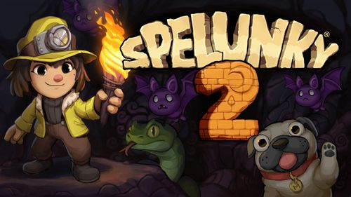

게임을 소개합니다

SPELUNKY2
Spelunky 2 builds upon the unique, randomized challenges
that made the original a roguelike classic, offering a huge
adventure designed to satisfy players old and new.
Meet the next generation of explorers as they find themselves
on the Moon, searching for treasure and missing family.
Spelunky 2는 오리지널을 로그라이크 클래식으로 만든 독특하고 무작위적인 챌린지를 기반으로 하며,
오래된 플레이어와 새로운 플레이어를 모두 만족시키도록 설계된 거대한 모험을 제공합니다.
보물과 실종된 가족을 찾아 달에 도착한 차세대 탐험가를 만나보세요.
-steam 상점페이지
- 장르
- 로그라이크
-
spelunky2는 정해진 규칙안에서 무작위로 생성되는 위협적인 함정으로 무장한 지형들과
적 및 아이템 사이에서 신속하게 찾아오는 영구적이고 빈번한 죽음들을 피해 자원 관리 및 전략은 물론 기술과 반사신경을 사용하여 보물을 수집해 생존하고 탈출해야합니다.
사망시 모든 것을 잃으며 플레이어는 고작 4개의 폭탄, 로프, 생명만을 가지고 다시 시작해야하는 로그라이크 게임입니다.
Other Series